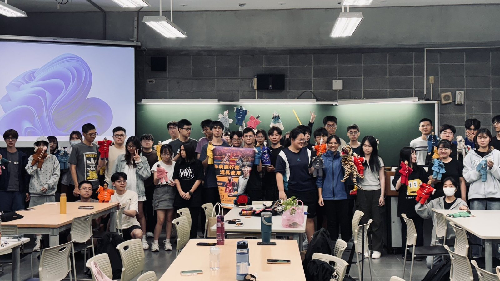
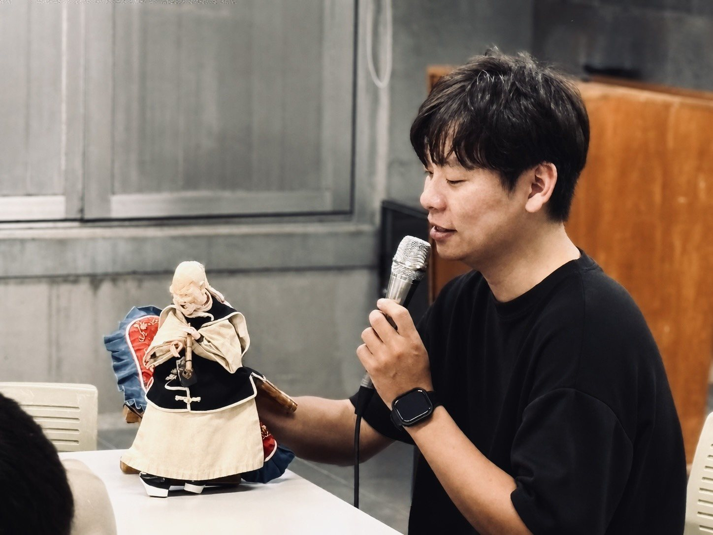
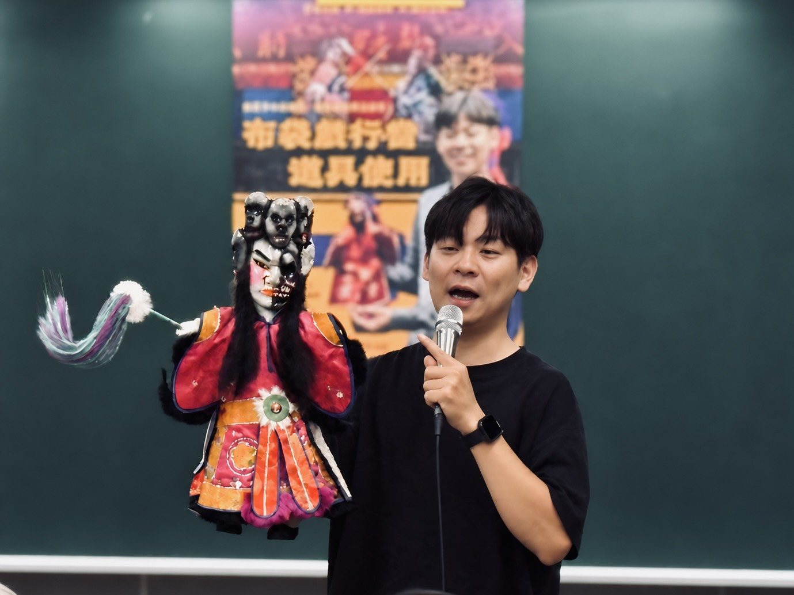
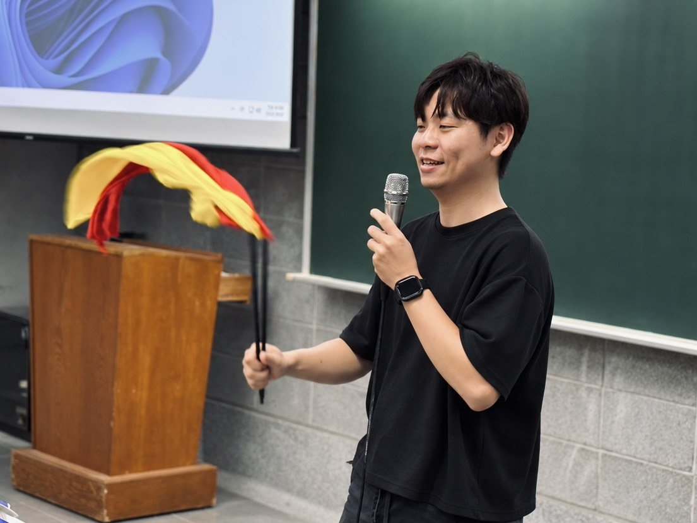

01
劇目演出
從既有劇目中選擇適合藝術節、劇場、校園或親子活動的內容，依劇目條件洽談完整製作或節選版本。
查看劇目選單 →從完整劇目到校園講座與布袋戲體驗，依不同場域、觀眾與活動時間共同設計合適的合作版本。
從既有劇目中選擇適合藝術節、劇場、校園或親子活動的內容，依劇目條件洽談完整製作或節選版本。
查看劇目選單 →可依課程需求安排布袋戲行當、戲偶與砌末、聲音表演、臺語口白、傳統後場與創作經驗分享。
操偶示範、角色聲線、手持道具與簡易工藝體驗等，可與演出搭配，設計不同深度的推廣活動。
合作前可提供活動時段、場地條件、觀眾年齡與預期形式。劇團會依劇目結構與技術條件，討論合適的完整、節選或演出＋體驗版本；實際內容以雙方確認為準。
團長陳建霖於國立宜蘭大學講解布袋戲角色行當與道具「砌末」的運用，並示範一人分飾多角的聲線變化，透過戲偶、道具與現場互動，讓學生從表演現場理解布袋戲的操作與聲音語彙。
講座內容亦可依學校課程、社團、通識教育或藝文推廣需求調整主題與時間。




來信時可簡單提供活動日期、地點、預計觀眾、場地形式與可用時段，我們會依需求回覆合適的演出或推廣方式。